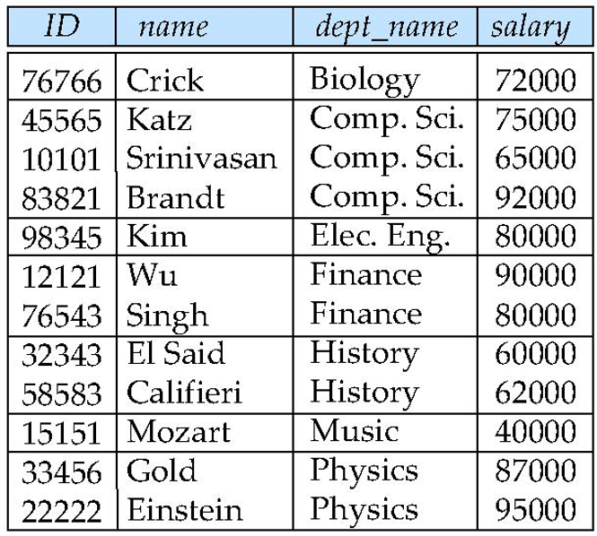

数据库系统及其应用｜SQL
SQL
SQL 是什么？
-
SQL 有四个能力：
- 数据定义语言(Data definition language, DDL)：SQL可以用来
定义、删除数据库模式
1
2
3
4
5
6
7CREATE TABLE instructor
( ID char(5),
name varchar(20) not null,
dept_name varchar(20),
salary numeric(8,2)
PRIMARY KEY (ID)
)- 查询语言(Query language)：SQL可以用来
检索数据
1
2
3SELECT ID
FROM instructor
WHERE salary>65000;- 数据操纵语言(Data manipulation language)：SQL可以用来完成数据的
增删改操作，例如向数据表中删除一条记录和插入一条记录
1
2
3delete from instructor
where dept_name = ‘History’;
insert into instructor values (‘10211’, ’Smith’, ’Biology’, 66000);- 数据控制语言(Data Control language)：SQL可以用来控制访问数据的
权限以及数据的完整性约束
1
2PRIMARY KEY (ID), CHECK (name IS NOT NULL)
grant select on instructor to U1,U2 - 数据定义语言(Data definition language, DDL)：SQL可以用来
-
SQL是非过程语言，即只需告诉要什么，而不需告诉如何得到。
SQL 数据定义
- 数据库中的关系集必须通过 DDL 向系统指定。DDL 不仅允许指定一组关系，还允许指定有关每个关系的信息，包括：
- 定义数据库中每个关系的
模式(schema)（关系表结构） - 定义每个属性的
值域(domain)（比如年龄为short int，name 为varchar(10)） - 定义完整性约束（例如年龄取值在0~150之间，成绩在0-100之间）
- 定义每个关系的
索引(index)（加快查询速度的一种技术） - 定义每个关系的安全和权限
- 定义每个关系在磁盘上的物理存储结构（例如每个关系对应的文件结构，每个记录的存储方式）
- 定义数据库中每个关系的
基本数据类型
- SQL 标准支持多种固有类型，包括：
- char(n)：固定长度的字符串，用户指定长度 n
- varchar(n)：可变长度的字符串，用户指定最大长度 n
- int：整数类型
- smallint：小整数类型
- numeric(p, d)：定点数，精度由用户指定
- 这个数有 p 位数字（加上一个符号位），其中 d 位数字在小数点右边
- real, double precision：浮点数与双精度浮点数
- float(n)：精度至少为 n 位的浮点数
基本模式定义
- 创建表结构
- SQL 关系是用
create table命令定义的 create table命令的通用形式是：
1
2
3
4create table r (A1 D1, A2 D2, ..., An Dn,
(integrity-constraint_1),
...,
(integrity-constraint_k))- r 是关系名
- 每个 A_i 是关系 r 模式中的一个属性名
- D_i 是属性 A_i 的值域，指定了属性 A_i 的类型以及可选的约束
- SQL 关系是用
- SQL 支持许多不同的完整性约束(Integrity Constraints)
- Not null：非空
- primary key (A1, …, An )：表示属性集合(A1, …, An )构成
主码，自动保证非空和唯一 - foreign key (Am, …, An ) references r：属性集合(A1, …, An )构成
外码，这些属性是关系r的主码 - check §: P 是一个
谓词表达式，根据数据库中对数据的要求，程序员写这个谓词表达式，例如credit>0 and credit<4
- 删库跑路(Drop and Alter Table Constructs)
- drop table student
- 表示删除了 studen t
表以及表中所有的数据
- 表示删除了 studen t
- delete from student
- 删除表的所有内容，但
保留表
- 删除表的所有内容，但
Drop table r 和 delete from table r 本质不同，drop 是彻底删除了表以及表中的数据，delete 只是删除了表中的数据记录，表还是存在着，delete 可以删除部分满足某个条件的记录
- alter table：修改表的模式，即修改表的结构
- alter table r add A D：给表 r
增加一列，命名为A，值域为D - alter table r drop A：
去掉表 r 中的A列
- alter table r add A D：给表 r
- drop table student
SQL 查询的基本结构
基本结构
- SQL 数据操作语言(data-manipulation language, DML) 提供了查询信息以及插入、删除和更新元组的功能
- 典型的 SQL 查询的格式为：
1 | |
- A_i 表示属性、r_i 表示关系、P 是谓词
sql 查询的结果依然是一个关系
Select 子句
- Select 子句列出了查询结果中所需的属性，对应于关系代数的投影运算
注意：SQL 名称不区分大小写- 数据表中每一个记录都是唯一的，但是当查询只关注某些列时，查询结果中的记录可能不唯一，会出现重复数据
- SQL 提供了关键字 distinct，在查询结果中
去掉重复
1
2select distinct dept_name
from instructor- 也可以使用 all 关键字，指定不删除重复项
1
2select all dept_name
from instructor- 使用
*表示所有属性
1
2select *
from instructor- Select 子句可以
包含涉及运算+、–、*和 /的算术表达式，以及对元组的常量或属性进行运算
1
2select ID, name, salary/12
from instructorselect salary/12中可以对表中的属性进行数学计算，查询结果是属性计算后的结果，原数据表中该属性的值不变，意思是原表中的 salary 还是年薪，但查询结果显示的是月薪，即salary/12 - SQL 提供了关键字 distinct，在查询结果中
From 子句
- From 子句列出了查询中涉及的关系
- 对应于关系代数的
笛卡尔积运算
两个关系上的笛卡尔积：将第一个关系的
每个元组与第二个关系的所有元组进行连接 - 对应于关系代数的
自然连接(Natural Join)
-
Joins
- Join 是 SQL 常用的操作，用于查询数据来自多张数据表时
-
Natural Join
- 自然连接运算作用于两个关系，并产生一个关系作为结果
- 不同于两个关系上的笛卡尔积，自然链接只考虑那些在两个关系模式中
都出现的属性上取值相同的元组对 - 举例：列出教师的姓名以及他们所教授的课程的课程 ID。
1
2
3
4# 不使用 join
select name, course_id
from instructor, teaches
where instructor.ID = teaches.ID; # 实际上是外键约束1
2
3# 使用 join
select name, course_id
from instructor natural join teaches; -
在使用 Natural join 时需要注意：
同名的不相关属性被错误地做相等判断- 理解该例子：列出教师的姓名以及他们教授的课程名称
- 正确做法-1
1
2
3select name, title
from instructor natural join teaches, course # 先做自然连接，再做笛卡尔积
where teaches.course_id = course.course_id;- 正确做法-2
1
2select name, title
from (instructor natural join teaches) join course using(course_id); # 有条件的 join为了发扬自然连接的优点，同时避免不必要的相等属性带来的危险，SQL 提供了一种自然连接的构造形式，允许用户来指定需要哪些列相等
- 错误做法
1
2
3select name, title
from instructor natural join teaches natural join course;
# 该做法要求 course.dept_name = instructor.dept_name，如果老师教授非本专业课程则会出错
- 理解该例子：列出教师的姓名以及他们教授的课程名称
附加的基本运算
重命名操作(Rename Operation)
- SQL 允许使用 as 子句重命名
关系和属性：
1 | |
- as 子句既可以出现在 select 子句中，也可以出现在 from 子句中
- as 关键字是可选的，
instructor as T和instructor T等价
字符串运算
-
SQL 使用一对单引号来标示字符串，如果单引号是字符串的组成部分，那就用两个单引号字符表示
-
SQL 包括一个字符串匹配运算符，用于比较字符串。 在字符串上可以使用 like 操作符实现模式匹配，用两个特殊字符来描述模式
- 百分号(%)：匹配任意子串
- 下划线(_)：匹配任意一个字符
- 使用 escape 关键字定义转义字符
- 示例：
1
2
3
4
5
6
7select name
from instructor
where name like '%dar%' ;
# 查找姓名包含子字符串"dar"的所有教师的姓名。
like '100 \%' escape '\'
# 匹配字符串"100 %"- 模式区分大小写
-
SQL 支持各种字符串操作
- 串联：使用"||"
- 大小写转换：upper(s)、lower(s)
- 查找字符串长度、提取子字符串等
排列元组的显示次序
- SQL提供了查询结果有序输出的关键字 Order by
- by 后面写排序所基于的属性
- order by 子句默认使用升序
- 为了说明顺序，可以用 desc 表示降序，或用 asc 表示升序
- 排序可以在多个属性上进行
1
2
3select *
from instructor
order by salary desc, name asc;
where 子句谓词
- between 比较运算符说明一个值是小于或等于某个值，同时大于或等于另一个值
1 | |
- 比较结果可以使用逻辑连接词进行组合 and, or, not
- SQL 允许用记号 (v_1, v_2, …, v_n) 来表示一个分量值为 v_1, v_2, …, v_n 的 n 维元组
1 | |
集合运算
- SQL 作用在关系上的 union、intersect、except 运算对应于数学集合论中的 运算
- 上述每个操作都会
自动消除重复项，要保留所有重复项，请使用相应的多集版本：union all, intersect all, except all
- 上述每个操作都会
1 | |
空值(Null Values)
- NULL是一个特殊的属性取值，表明某个记录的该属性取值不确定，不知道或不存在
- 任何涉及 null 的
算术表达式的结果都是 null - 任何涉及 null 的
比较运算的结果都是unknown - 谓词为 null 可用于
检查空值1
2
3select name
from instructor
where salary is null
- 使用真值为
unknown的三值逻辑：- OR:
- (unknown or true) = true
- (unknown or false) = unknown
- (unknown or unknown) = unknown
- AND:
- (true and unknown) = unknown
- (false and unknown) = false
- (unknown and unknown) = unknown
- NOT:
- (not unknown) = unknown
- 如果谓词 P 的值为 unknown, “P is unknown” 为 true
- OR:
- 如果 where 子句谓词的计算结果为 unknown，则将其视为 false
聚集函数(Aggregate Functions)
基本聚集
- 聚集函数是以值的一个集合（集或多重集）为输入、返回单个值的函数。SQL 提供了五个固有聚集函数：
- avg(attr)：返回平均 attr 值
- min(attr)：返回最小 attr 值
- max(attr)：返回最大 attr 值
- sum(attr)：返回 attr 中值的总和
- count(attr)：返回 attr 的值数
1 | |
分组聚集：Group By
- 在 SQL 中使用 group by 子句将聚集函数作用到一组元组集上
- group by 子句给出一个或多个属性用于构造分组，在 group by 子句中的所有属性上取值相同的元组被分在一个组中
- 示例：查找每个系的平均工资
1 | |

- 注意：使用分组时，需要保证出现在 select 语句中但没有
被聚集的属性只能是出现在 group by 子句中的那些属性
having 子句
- having 子句中的谓词在形成分组后起作用，可以使用聚集函数
- where 子句中的谓词在形成分组之前起作用
1 | |
-
和 select 子句类似，任何出现在 having 语句中但没有
被聚集的属性只能是出现在 group by 子句中的那些属性 -
包含聚集、group by 子句或 having 子句的查询的含义可以通过下属操作序列定义：
- 与不带聚集的查询情况类似，最先根据 from 子句来计算出一个关系
- 如果出现了 where 子句， where 子句中的谓词将应用到 from 子句的结果关系上
- 如果出现了 group by 子句．满足 where 谓词的元组通过 group by 子句形成分组。如果没有group 子句，满足 where 谓词的整个元组集被当作一个分组
- 如果出现了 having 子句，它将应用到每个分组上；不满足 having 子句谓词的分组将被抛弃
- select 子句利用剩下的分组产生出查询结果中的元组，即在每个分组上应用聚集函数来得到单个结果元组
对空值和布尔值的聚集
- 聚集函数根据以下原则处理 null
- 除了
count(*)外所有的聚集函数都忽略输入集合中的 null- 但是当属性取值都是 null 的时候，结果为 null
- 规定空集的
count运算值为 0
- 除了
本博客所有文章除特别声明外，均采用 CC BY-SA 4.0 协议 ，转载请注明出处！